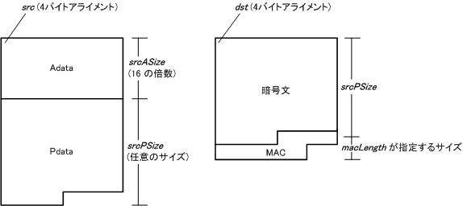

#include <twl/aes.h>
#define AES_BLOCK_SIZE 16 // 128 bit
#define AES_ADATA_BLOCK_NUM_MAX 0xFFFF
#define AES_PDATA_BLOCK_NUM_MAX 0xFFFF
#define AES_ADATA_SIZE_MAX (AES_BLOCK_SIZE * AES_ADATA_BLOCK_NUM_MAX)
#define AES_PDATA_SIZE_MAX (AES_BLOCK_SIZE * AES_PDATA_BLOCK_NUM_MAX)
AESResult AES_CcmEncryptAndSign( const AESNonce* pNonce,
const void* src,
u32 srcASize,
u32 srcPSize,
AESMacLength macLength,
void* dst,
AESCallback callback,
void* arg );
| pNonce | 暗号化に使用する Nonce。 |
|---|---|
| src | 平文へのポインタ。4バイトアライメントでなければなりません。また、メインメモリ上を指していなければなりません。 |
| srcASize | MAC の対象となるが、暗号化はされない平文のサイズ。0 以上 AES_ADATA_SIZE_MAX 以下で、
かつ AES_BLOCK_SIZE(=16) の倍数でなければなりません。 |
| srcPSize | MAC の対象となり、かつ暗号化される平文のサイズ。0 以上 AES_PDATA_SIZE_MAX 以下でなければなりません。 |
| macLength | MAC のサイズ。 |
| dst | 暗号文と MAC を格納するバッファへのポインタ。4バイトアライメントでなければなりません。また、メインメモリ上を指していなければなりません。 srcPSize ＋ macLength が示すバイト長の領域が必要です。 |
| callback | 暗号化完了時に呼び出されるコールバック関数へのポインタ。 NULL を指定することもできます。 |
| arg | 上記コールバック関数に渡されるユーザ定義のパラメータ。 NULL を含む任意の値を指定することができます。 |
AES の処理を正常に開始できた場合は AES_RESULT_SUCCESS を返します。
それ以外の返り値はエラーです。
CCM モードでの AES の暗号化および署名処理を開始します。
AES_SetKey() で設定された鍵と pNonce で指定された
Nonce を用いて暗号化と署名を行います。
署名の対象となるのは src の位置から
srcASize ＋ srcPSize バイトで、
暗号化の対象となるのは src ＋ srcASize の位置から
srcPSize バイトです。
暗号化結果は dst の位置から srcPSize バイト
の領域に書き込まれ、それに続いて macLength が示すバイト長の MAC が書き出されます。
暗号化処理が完了するとその結果と arg を引数として
callback が呼び出されます。
callback は割り込みハンドラから呼び出されるため、
割り込み禁止状態で呼び出されることに注意してください。
また、逆に割り込み禁止状態では callback が
呼び出されないことにも注意してください。
メモリ上のデータ配置に関しては以下の図を参照してください。

この関数は処理を開始するとすぐに制御を返します。
処理が正常に開始されると返り値は AES_RESULT_SUCCESS になりますが、
その後、処理中にエラーが発生した場合にはエラー値と arg を引数として
callback が呼び出されます。
このコールバックによるエラー通知は割り込みハンドラから起動されますので
場合によっては関数から処理が返る前にコールバックによってエラーが通知される可能性があることに注意してください。
暗号化の鍵はあらかじめ AES_SetKey()
で設定しておく必要があります。
鍵と Nonce は暗号化時と復号化時で同じものを使用しなければなりません。 鍵は外部に知られてはなりませんが、Nonce は外部に公開しても問題ありません。 ただし、Nonce はこの関数を呼び出すごとに異なる値を使用しなければなりません。
一般的な CCM では CCM ヘッダの直後に Adata のサイズが配置され、 その後に Adata が続く形で MAC の計算が行われますが、 本関数では Adata は CCM ヘッダの直後から配置されているものとして MAC が計算されます。 必要であればあらかじめ Adata に Adata のサイズを含めておく必要があります。
2008/09/03 Adata のサイズが MAC の算出に使用されないことを追記。
2008/07/11 AES_ADATA_SIZE_MAX,PDATA_SIZE_MAXを追加
2007/12/25 初版